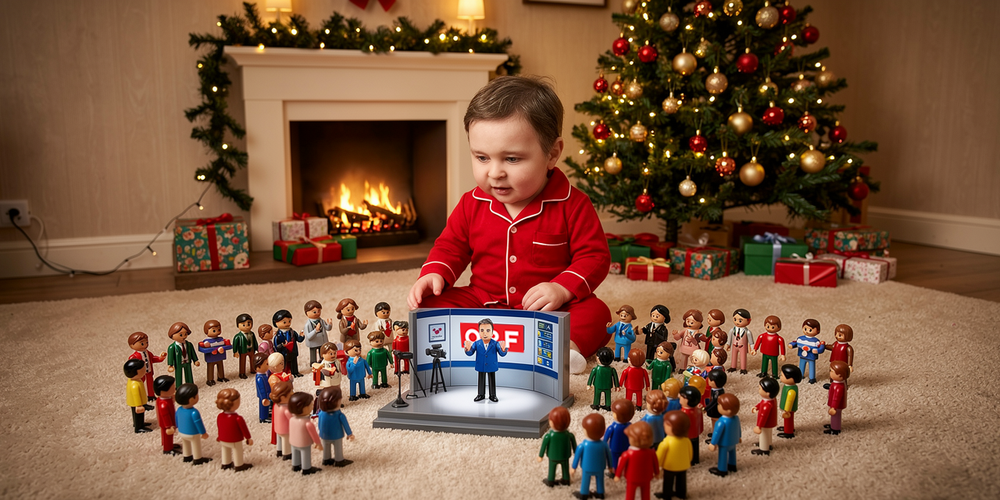

Endlich in Planung: Österreichs neue Wirklichkeit
Der ORF soll eine „gemeinsame Wirklichkeit“ herstellen. Medienminister Andreas Babler hat bereits erklärt, wie sie aussehen soll.

WIEN – Andreas Babler wünscht sich eine Welt, in der alles genauso funktioniert, wie der Andi es sich vorstellt.
In dieser Wirklichkeit ist ein Staplerfahrer Kanzler auf Lebenszeit und voll beliebt bei Jung und Alt. Der Umverteilungstopf ist niemals leer. Die Leistungsträger zahlen mehr, als sie können, bleiben aber trotzdem im Land und hören endlich auf zu raunzen. Unternehmer und Fleissige freuen sich über Steuererhöhungen und ihren sozialen Auftrag. Der Kanzler verteilt das Geld anschliessend so lange, bis alle ganz viel davon haben, und alle sind ihm dankbar.
Migranten werden ausnahmslos als Hirnchirurgen, Ingenieure oder Raketenforscher anerkannt – auch von den ewigen Zweiflern. Familiennachzug ist deshalb kein Kostenfaktor, sondern die Bereitstellung weiterer Fachkräfte.
Strom wird durch weniger Kraftwerke billiger, Wohnungen entstehen durch einen Rechtsanspruch auf leistbares Wohnen und Unternehmen schaffen zusätzliche Arbeitsplätze aus dem Geld, das sie sicher irgendwo noch haben. Die böse FPÖ gibt es gar nicht.
Auch für den ORF selbst hat Babler einen Wunschzettel abgegeben. Er wünsche sich einen schlankeren, digitaleren, transparenteren, unabhängigeren, bürgernäheren, schöneren, melodischeren, bunteren, höheren, breiteren, runderen, flauschigeren, glutenfreieren, wetterfesteren, kindersichereren, alpintauglicheren, mineralstoffreicheren, zusammenklappbaren und im Bedarfsfall leicht abwischbaren ORF.
Der ORF kürzte die Liste in seiner Berichterstattung nach fünf Adjektiven. Damit war die erste Reform bereits gelungen: Der ORF wurde schlanker.
Wann die neue Wirklichkeit geliefert wird, liess der Medienminister offen. Weihnachten bietet sich an. Dann kann das Christkind auch gleich das grosse Playmobil-Funkhaus mit neun Landesstudios, abnehmbarem Publikumsrat und batteriebetriebener gemeinsamer Wirklichkeit unter den Baum legen.
Anlass: Andreas Babler erklärte beim ORF-Zukunftsforum, der öffentlich-rechtliche Rundfunk könne eine journalistisch geprüfte „gemeinsame Wirklichkeit“ herstellen. Er wünsche sich einen „schlankeren, digitaleren, transparenteren, unabhängigeren und bürgernäheren“ ORF. ORF, 10. September 2026
← Zurück zur Startseite